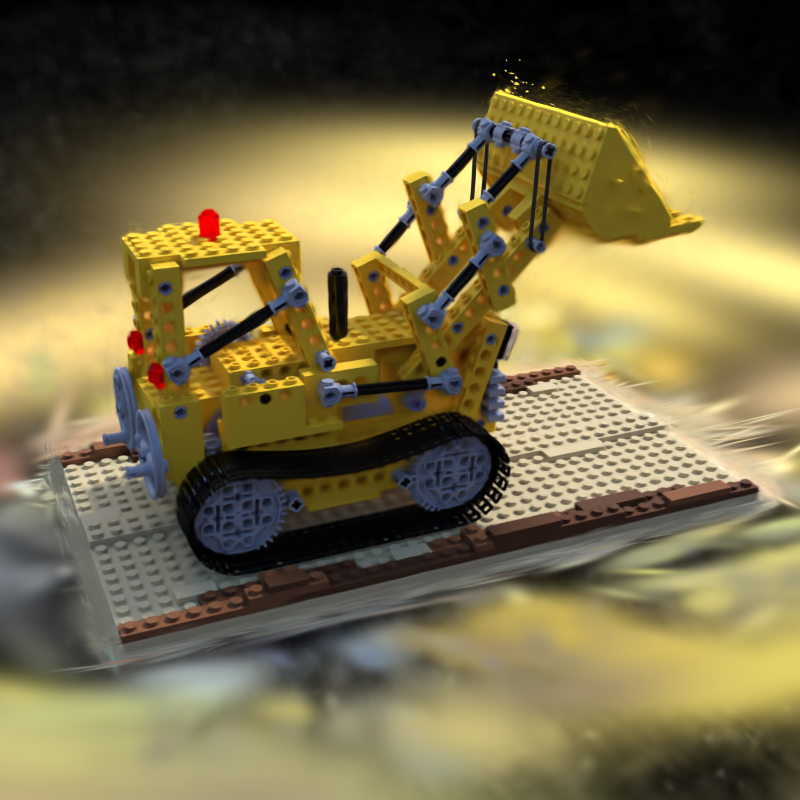
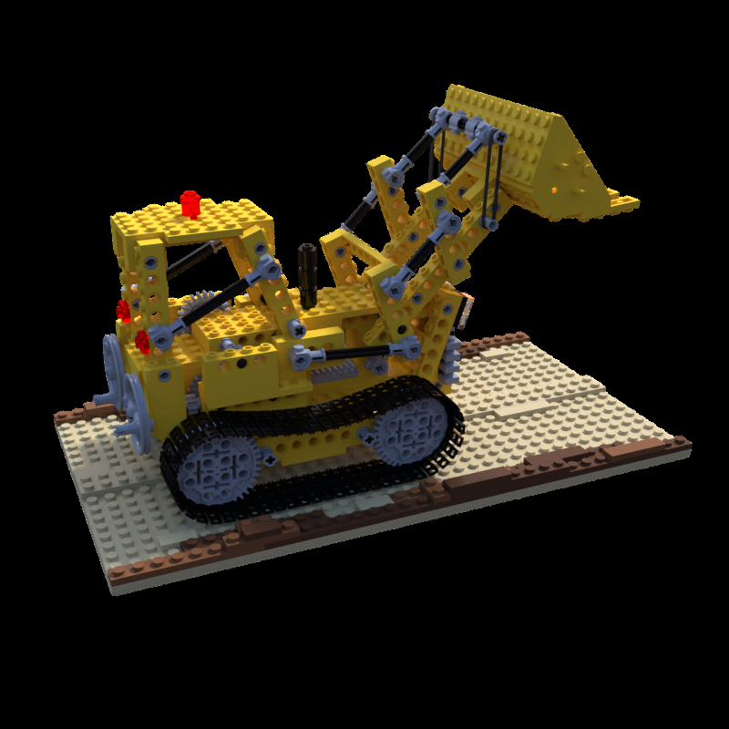

Posed images
Training views and camera calibration
SYNTHETIC NERF · NOVEL VIEW SYNTHESIS
A real-time radiance field built from posed images, represented as a compact set of optimizable 3D Gaussians.

PROJECT OVERVIEW
A 3D Gaussian Splatting reconstruction trained on the synthetic NeRF Lego scene.
Starting from camera poses and a sparse point cloud, the method initializes anisotropic 3D Gaussians and jointly optimizes their position, covariance, opacity, and appearance. Adaptive density control adds or removes Gaussians where image-space errors remain high. The resulting representation supports fast, continuous rendering from new camera positions.
The saved model contains 134,826 Gaussians after 3,000 iterations. The viewer below loads the trained PLY directly; the images show one matching training view and its reconstruction.
METHOD
Training views and camera calibration
Seed Gaussians from scene geometry
Photometric loss and density control
Real-time Gaussian rasterization
INTERACTIVE RECONSTRUCTION
TRAINING VIEW

lego-gt.pnglego-render.pngBoth images use the same training camera. They illustrate the saved 3,000-iteration model; no held-out quality metrics are claimed here.
| Scene | Split | Iterations | Gaussians | Model |
|---|---|---|---|---|
| Synthetic NeRF Lego | Training view 035 | 3,000 | 134,826 | 31.9 MB PLY |
REFERENCE
Method reference: Bernhard Kerbl, Georgios Kopanas, Thomas Leimkühler, and George Drettakis. 3D Gaussian Splatting for Real-Time Radiance Field Rendering. ACM Transactions on Graphics, 42(4), 2023.
Read the paper ↗@article{kerbl2023gaussians,
author = {Kerbl, Bernhard and Kopanas, Georgios and Leimk{"u}hler, Thomas and Drettakis, George},
title = {3D Gaussian Splatting for Real-Time Radiance Field Rendering},
journal = {ACM Transactions on Graphics},
volume = {42},
number = {4},
year = {2023}
}